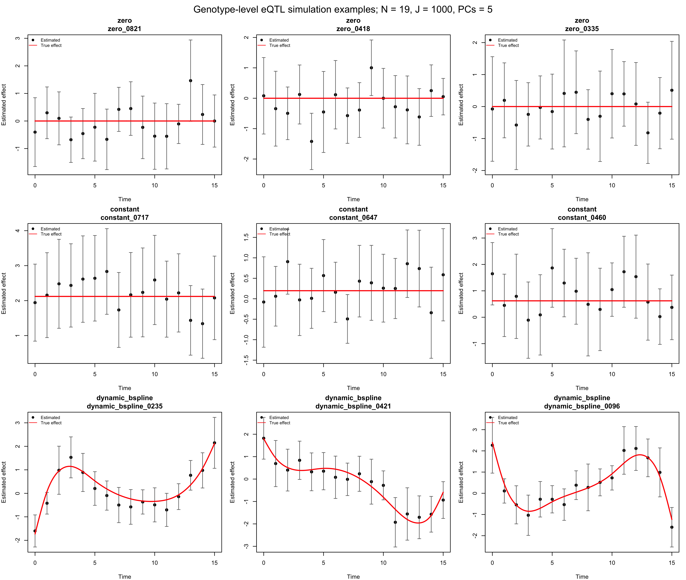
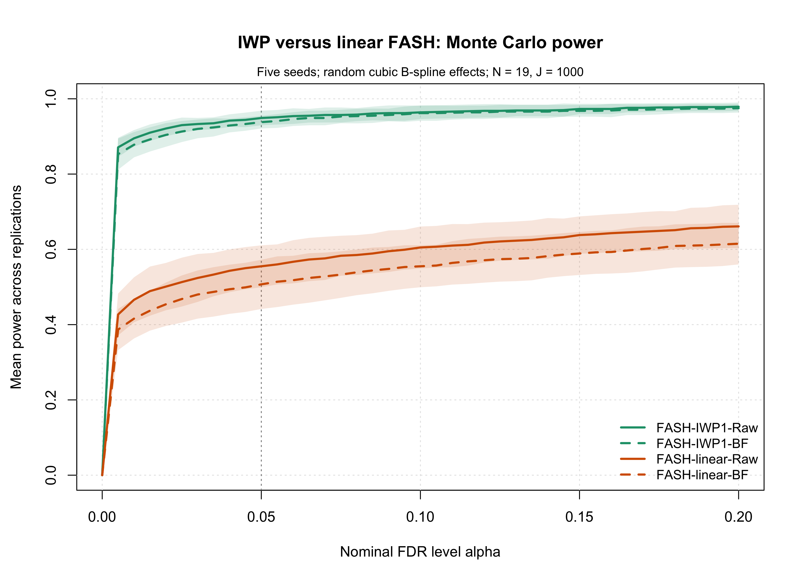
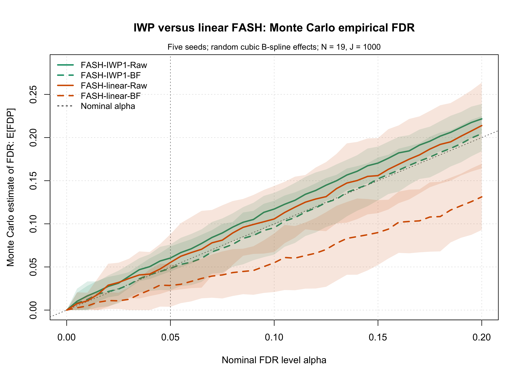
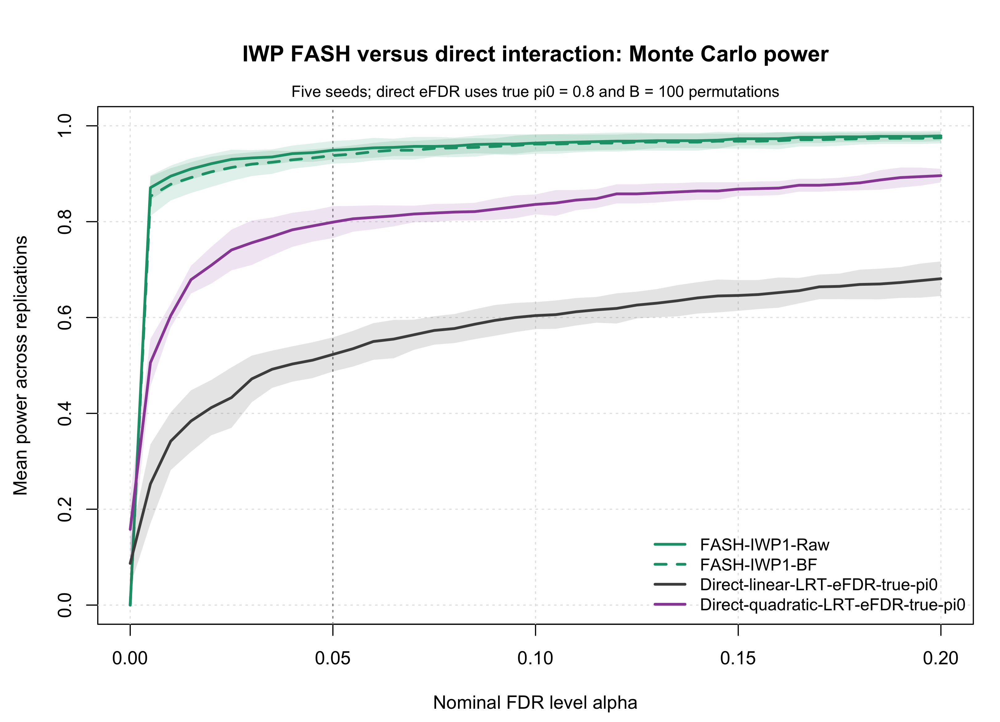
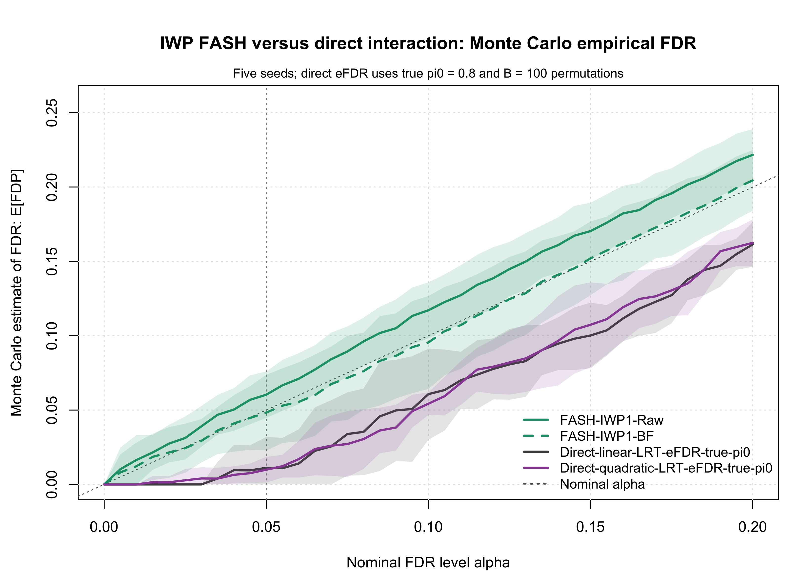

Last updated: 2026-08-07
Checks: 6 1
Knit directory: coderepo-local/
This reproducible R Markdown analysis was created with workflowr (version 1.7.2). The Checks tab describes the reproducibility checks that were applied when the results were created. The Past versions tab lists the development history.
The R Markdown is untracked by Git. To know which version of the R
Markdown file created these results, you’ll want to first commit it to
the Git repo. If you’re still working on the analysis, you can ignore
this warning. When you’re finished, you can run
wflow_publish to commit the R Markdown file and build the
HTML.
Great job! The global environment was empty. Objects defined in the global environment can affect the analysis in your R Markdown file in unknown ways. For reproduciblity it’s best to always run the code in an empty environment.
The command set.seed(20251109) was run prior to running
the code in the R Markdown file. Setting a seed ensures that any results
that rely on randomness, e.g. subsampling or permutations, are
reproducible.
Great job! Recording the operating system, R version, and package versions is critical for reproducibility.
Nice! There were no cached chunks for this analysis, so you can be confident that you successfully produced the results during this run.
Great job! Using relative paths to the files within your workflowr project makes it easier to run your code on other machines.
Great! You are using Git for version control. Tracking code development and connecting the code version to the results is critical for reproducibility.
The results in this page were generated with repository version 9fbd863. See the Past versions tab to see a history of the changes made to the R Markdown and HTML files.
Note that you need to be careful to ensure that all relevant files for
the analysis have been committed to Git prior to generating the results
(you can use wflow_publish or
wflow_git_commit). workflowr only checks the R Markdown
file, but you know if there are other scripts or data files that it
depends on. Below is the status of the Git repository when the results
were generated:
Ignored files:
Ignored: .DS_Store
Ignored: .Rhistory
Ignored: .Rproj.user/
Ignored: analysis/.DS_Store
Ignored: analysis/.Rhistory
Ignored: code/.DS_Store
Ignored: code/.Rhistory
Ignored: data/appendixB/
Ignored: data/dynamic_eQTL_real/
Ignored: data/revision_simulations/
Ignored: data/toy_example/
Ignored: output/dynamic_eQTL_real/
Ignored: output/pdf/
Ignored: output/revision_simulations/
Untracked files:
Untracked: Rplots.pdf
Untracked: analysis/revision_balanced_variant_thinning.rmd
Untracked: analysis/revision_combined_spiky_genotype_simulation.rmd
Untracked: analysis/revision_correlated_error_simulation.rmd
Untracked: analysis/revision_functional_testing_simulation.rmd
Untracked: analysis/revision_genotype_level_simulation.rmd
Untracked: analysis/revision_internal_correlated_likelihood_sensitivity.rmd
Untracked: analysis/revision_internal_mashr_mean_z_null_correlation.rmd
Untracked: analysis/revision_internal_observational_null_set_pilot.rmd
Untracked: analysis/revision_internal_one_variant_per_gene_refit.rmd
Untracked: analysis/revision_internal_real_genotype_simulation.rmd
Untracked: analysis/revision_internal_targeted_broad_calibration.rmd
Untracked: analysis/revision_internal_variant_annotation_enrichment.rmd
Untracked: analysis/revision_internal_zero_intercept_correlation.rmd
Untracked: analysis/revision_ld_tagging_switch_example.rmd
Untracked: code/00_eQTLs_CL.R
Untracked: code/01_fash_CL.R
Untracked: code/01_fash_CL.sbatch
Untracked: code/09_penalty_sensitivity.R
Untracked: code/09_penalty_sensitivity.sbatch
Untracked: code/revision_simulations/
Untracked: fash_prior_comparison_order1_after.pdf
Untracked: fash_prior_comparison_order1_after.png
Untracked: fash_prior_comparison_order1_before.pdf
Untracked: fash_prior_comparison_order1_before.png
Untracked: fash_prior_comparison_order2_after.pdf
Untracked: fash_prior_comparison_order2_after.png
Untracked: fash_prior_comparison_order2_before.pdf
Untracked: fash_prior_comparison_order2_before.png
Unstaged changes:
Modified: .gitignore
Modified: analysis/dynamic_eQTL_real.rmd
Modified: analysis/index.Rmd
Modified: analysis/nonlinear_dynamic_eQTL_real.Rmd
Modified: code/README.md
Modified: output/toy_example/toy_example_11.pdf
Modified: output/toy_example/toy_example_12.pdf
Modified: output/toy_example/toy_example_21.pdf
Modified: output/toy_example/toy_example_22.pdf
Note that any generated files, e.g. HTML, png, CSS, etc., are not included in this status report because it is ok for generated content to have uncommitted changes.
There are no past versions. Publish this analysis with
wflow_publish() to start tracking its development.
This genotype-level simulation uses random cubic B-spline dynamic effects as a non-IWP data-generating mechanism. It is the broad, smoothly varying baseline; the separate spiky transient analysis examines sharply localized effects.
For donor \(i\), variant \(j\), and time \(t\), expression is generated as
\[ Y_{ijt} = \alpha_{jt} + G_{ij}\beta_j(t) + X_i^T\gamma_{jt} + \epsilon_{ijt}, \qquad \epsilon_{ijt} \sim N(0, 1). \]
For each variant, the minor-allele frequency is drawn from \(p_j\sim\mathrm{Uniform}(0.1,0.5)\) and \(G_{ij}\sim\mathrm{Binomial}(2,p_j)\); monomorphic draws are repeated. The five columns of \(X\) are generated independently from \(N(0,1)\) and standardized across donors. Independently for each covariate, variant, and time, \(\gamma_{kjt}\sim N(0,0.5^2)\). The current simulation sets \(\alpha_{jt}=0\); each fitted regression still includes an intercept. Genotype, covariate, covariate-effect, and noise draws are mutually independent.
seed <- 12345
set.seed(seed)
genotype_sim <- simulate_genotype_matrix(
n_donors = 19,
n_variants = 1000,
maf_range = c(0.1, 0.5)
)
covariates <- simulate_covariate_matrix(
n_donors = 19,
n_covariates = 5
)Each simulated dataset has 19 donors, 16
time points, 1000 variants, and five PC-like covariates.
The variant classes are fixed at:
200 dynamic eQTLs with random cubic B-spline
effects;400 non-dynamic eQTLs with constant effects drawn from
\(N(0,1)\);400 zero-effect variants.For a dynamic variant,
\[ \beta_j(t) = \mu_j + h_j(t), \qquad \mu_j \sim N(0,1), \qquad h_j(t) = \sum_{k=1}^{6} b_{jk} B_k(t), \qquad b_{jk} \stackrel{\mathrm{iid}}{\sim} N(0,1). \]
Only the time-varying deviation \(h_j(t)\) is mean-centered over the observed
times and scaled to have maximum absolute value 2. The
independent \(\mu_j\) is the genetic
main effect, so the final trajectory is not constrained to be centered
at zero. Thus, the true dynamic-null proportion is \(\pi_0 = 0.8\).
class_probs <- c(
dynamic_bspline = 0.20,
constant = 0.40,
zero = 0.40
)
effect_sim <- simulate_variant_effect_curves(
n_variants = 1000,
time_grid = 0:15,
class_probs = class_probs,
dynamic_amplitude = 2,
bspline_df = 6,
bspline_coefficient_sd = 1,
constant_sd = 1,
dynamic_main_effect_sd = 1,
exact_class_counts = TRUE,
seed = revision_component_seeds(seed)[["functional_truth"]],
scenario = "genotype_random_bspline_main_effect_dynamic_eqtl"
)
expression_sim <- simulate_eqtl_expression_from_genotypes(
G = genotype_sim$G,
beta_matrix = effect_sim$beta_matrix,
time_grid = 0:15,
covariates = covariates,
expression_noise_sd = 1,
covariate_effect_sd = 0.5,
intercept_sd = 0
)At each time point, the genetic effect and its standard error are
estimated from Y ~ G + PC1 + PC2 + PC3 + PC4 + PC5. The
real-data-like t-statistic standard-error correction uses
\[ \mathrm{df} = 19 - 7 = 12, \]
corresponding to the intercept, genotype, and five covariates. All methods use the same per-time estimates and corrected standard errors.
eqtl_summary <- estimate_eqtl_summaries_from_genotypes(
G = genotype_sim$G,
expression = expression_sim$expression,
covariates = covariates,
apply_t_se_correction = TRUE
)
datasets <- make_fash_datasets_from_eqtl_summary(
beta_hat = eqtl_summary$beta_hat,
se = eqtl_summary$se,
true_beta = effect_sim$beta_matrix,
time_grid = 0:15,
unit_info = effect_sim$unit_info,
scenario = "genotype_random_bspline_main_effect_dynamic_eqtl"
)
fash_iwp1_raw <- fashr::fash(
Y = "y",
smooth_var = "x",
S = "sd",
data_list = datasets,
order = 1,
grid = default_revision_grid(),
num_basis = 20,
penalty = 10,
num_cores = 4,
verbose = FALSE
)
fash_iwp1_bf <- fashr::BF_update(fash_iwp1_raw, plot = FALSE)
linear_sigma_grid <- exp(seq(log(0.05), log(5), length.out = 25))
fash_linear_raw <- fit_simplified_fash(
datasets = datasets,
estimate_sigma = TRUE,
sigma_beta_grid = linear_sigma_grid,
scale_time = TRUE
)
fash_linear_bf <- BF_update_simplified_fash(fash_linear_raw)The reported curves and tables average five independently simulated
datasets with seeds 12345, 22345,
32345, 42345, and 52345. The full
seed-12345 object is used only to display representative
trajectories.
The panels show three zero-effect variants, three constant eQTLs, and three random B-spline dynamic eQTLs. Points are per-time genetic effect estimates, bars show two corrected standard errors, and red lines are the true effects.
plot_genotype_eqtl_examples(
out,
classes = c("zero", "constant", "dynamic_bspline"),
n_per_class = 3,
seed = 1,
true_curve_n = 500
)
Figure R1.1: Representative zero-effect, constant-effect, and random B-spline dynamic eQTLs from seed 12345. Points are estimated genetic effects, vertical bars span two corrected standard errors, and red curves are the true effects.
This comparison changes only the alternative prior.
FASH-IWP1 uses the first-order IWP alternative.
FASH-linear uses a constant-versus-linear model on time
scaled to \([0,1]\): its alternative
adds a slope \(b\sim
N(0,\sigma_\beta^2)\) to the unrestricted intercept. Within each
seed, the fit profiles \(\pi_0\)
separately at each of 25 log-spaced candidate values of \(\sigma_\beta\) from 0.05 to
5, then selects the pair with the largest marginal
likelihood. The BF adjustment updates the mixture weight while holding
the selected \(\sigma_\beta\) fixed.
Across the five seeds, the selected slope SD has mean 1.581 and observed
range [1.581, 1.581].
The table reports the fitted prior weight on each method’s constant component. The true dynamic-null proportion is \(\pi_0 = 0.8\).
knitr::kable(
pi0_table,
align = "l",
caption = paste(
"Table R1.1: Estimated dynamic-null proportions and selected linear slab",
"scales across five random B-spline simulation replicates."
)
)| Method | Fit | Mean estimated pi0 (95% MC CI) | Selected slope SD: mean [range] |
|---|---|---|---|
| FASH-IWP1 | Raw | 0.785 [0.770, 0.800] | — |
| FASH-IWP1 | BF-corrected | 0.832 [0.829, 0.836] | — |
| FASH-linear | Raw | 0.785 [0.769, 0.800] | 1.581 [1.581, 1.581] |
| FASH-linear | BF-corrected | 0.906 [0.895, 0.917] | 1.581 [1.581, 1.581] |
knitr::kable(
fash_table,
align = "l",
caption = paste(
"Table R1.2: Monte Carlo power and empirical FDR at alpha 0.05 for IWP",
"and linear FASH under random B-spline effects."
)
)| Method | Mean discoveries | Power (95% MC CI) | Empirical FDR: E[FDP] (95% MC CI) |
|---|---|---|---|
| FASH-IWP1-Raw | 202.0 | 0.949 [0.930, 0.968] | 0.060 [0.045, 0.076] |
| FASH-IWP1-BF | 197.2 | 0.938 [0.921, 0.955] | 0.048 [0.023, 0.074] |
| FASH-linear-Raw | 117.6 | 0.555 [0.499, 0.611] | 0.055 [0.022, 0.088] |
| FASH-linear-BF | 104.4 | 0.507 [0.442, 0.572] | 0.028 [0.004, 0.053] |
plot_mc_alpha_curves(
fash_alpha,
metric = "power",
title = "IWP versus linear FASH: Monte Carlo power",
subtitle = "Five seeds; random cubic B-spline effects; N = 19, J = 1000",
style_profile = "combined"
)
Figure R1.2: Monte Carlo power across nominal alpha for IWP and linear FASH under random B-spline effects. Curves identify the raw and BF-updated methods shown in the in-figure legend; uncertainty summarizes five simulation seeds.
plot_mc_alpha_curves(
fash_alpha,
metric = "fdr",
title = "IWP versus linear FASH: Monte Carlo empirical FDR",
subtitle = "Five seeds; random cubic B-spline effects; N = 19, J = 1000",
legend_position = "topleft",
style_profile = "combined"
)
Figure R1.3: Monte Carlo empirical FDR across nominal alpha for IWP and linear FASH under random B-spline effects. Curves identify methods in the in-figure legend, and the diagonal reference marks equality between empirical FDR and nominal alpha.
At \(\alpha = 0.05\), IWP-Raw and IWP-BF have mean power 0.949 and 0.938, compared with 0.555 and 0.507 for the corresponding linear fits. Their empirical FDR estimates are 0.060 and 0.048. The IWP alternative therefore provides substantially higher power for these nonlinear broad curves. BF correction raises the estimated IWP null proportion and produces the expected more conservative fit.
The direct baselines fit individual-level expression using linear or
linear-plus-quadratic genotype-by-time interactions and use
permutation-based eFDR. To make this comparison favorable to the direct
methods, their eFDR calculation is supplied with the true \(\pi_0 = 0.8\) and uses B = 100
donor-level permutations per replicate.
out <- add_direct_interaction_efdr_results_to_genotype_output(
out = out,
n_permutations = 100,
alpha = 0.05,
seed = seed + 10000L,
lambda = 0.5,
pi0_method = "conservative",
true_pi0 = 0.8,
include_true_pi0 = TRUE,
permute_covariates_with_expression = TRUE,
num_cores = 4,
overwrite = TRUE,
verbose = FALSE
)knitr::kable(
direct_table,
align = "l",
caption = paste(
"Table R1.3: Monte Carlo power and empirical FDR at alpha 0.05 for IWP",
"FASH and direct interaction tests under random B-spline effects."
)
)| Method | Mean discoveries | Power (95% MC CI) | Empirical FDR: E[FDP] (95% MC CI) |
|---|---|---|---|
| FASH-IWP1-Raw | 202.0 | 0.949 [0.930, 0.968] | 0.060 [0.045, 0.076] |
| FASH-IWP1-BF | 197.2 | 0.938 [0.921, 0.955] | 0.048 [0.023, 0.074] |
| Direct-linear-LRT-eFDR-true-pi0 | 105.8 | 0.523 [0.487, 0.559] | 0.011 [0.000, 0.032] |
| Direct-quadratic-LRT-eFDR-true-pi0 | 161.4 | 0.799 [0.766, 0.832] | 0.010 [0.001, 0.019] |
plot_mc_alpha_curves(
direct_alpha,
metric = "power",
title = "IWP FASH versus direct interaction: Monte Carlo power",
subtitle = "Five seeds; direct eFDR uses true pi0 = 0.8 and B = 100 permutations",
style_profile = "combined"
)
Figure R1.4: Monte Carlo power across nominal alpha for IWP FASH and direct linear or quadratic interaction tests. The in-figure legend identifies methods; direct-test eFDR uses the true pi0 and 100 donor-level permutations.
plot_mc_alpha_curves(
direct_alpha,
metric = "fdr",
title = "IWP FASH versus direct interaction: Monte Carlo empirical FDR",
subtitle = "Five seeds; direct eFDR uses true pi0 = 0.8 and B = 100 permutations",
legend_position = "bottomright",
style_profile = "combined"
)
Figure R1.5: Monte Carlo empirical FDR across nominal alpha for IWP FASH and direct interaction tests. The in-figure legend identifies methods, and the diagonal reference marks equality between empirical FDR and nominal alpha.
At \(\alpha = 0.05\), IWP-BF has mean power 0.938, compared with 0.523 for the direct linear test and 0.799 for the direct quadratic test. IWP-BF has the highest power while maintaining mean empirical FDR 0.048. The direct tests are more conservative but less powerful, even with the true null proportion supplied.
For broad random B-spline effects, IWP FASH is substantially more powerful than linear FASH and both direct interaction baselines. The BF-updated IWP fit retains high power and conservative empirical FDR across this five-seed pilot. The separate spiky transient page evaluates whether this ordering persists for sharply localized one-, two-, and three-peak effects.
The R1 simulation driver uses the shared simulation functions. The page-specific cache validation and formatting are in R1 reporting code. The following command regenerates the full Monte Carlo cache. It is shown for reproducibility but is intentionally not evaluated during workflowr builds; the table and figure chunks above read the saved cache.
The full Monte Carlo cache can be regenerated with:
Rscript --vanilla \
code/revision_simulations/r1_random_bspline/run_random_bspline_mc_replication.R \
--J 1000 \
--n-donors 19 \
--n-covariates 5 \
--noise-sd 1 \
--dynamic-main-effect-sd 1 \
--efdr-permutations 100 \
--seed-list 12345,22345,32345,42345,52345 \
--output-id r1_random_bspline_main_effect_profile_sigma_pilot5 \
--num-cores 4Cached replicate metrics, summaries, and figures are stored under:
output/revision_simulations/mc/r1_random_bspline_main_effect_profile_sigma_pilot5/
sessionInfo()R version 4.5.1 (2025-06-13)
Platform: aarch64-apple-darwin20
Running under: macOS Sequoia 15.6.1
Matrix products: default
BLAS: /System/Library/Frameworks/Accelerate.framework/Versions/A/Frameworks/vecLib.framework/Versions/A/libBLAS.dylib
LAPACK: /Library/Frameworks/R.framework/Versions/4.5-arm64/Resources/lib/libRlapack.dylib; LAPACK version 3.12.1
locale:
[1] C.UTF-8/C.UTF-8/C.UTF-8/C/C.UTF-8/C.UTF-8
time zone: America/Chicago
tzcode source: internal
attached base packages:
[1] stats graphics grDevices utils datasets methods base
other attached packages:
[1] workflowr_1.7.2
loaded via a namespace (and not attached):
[1] vctrs_0.7.3 httr_1.4.7 cli_3.6.6 knitr_1.50
[5] rlang_1.2.0 xfun_0.55 stringi_1.8.7 otel_0.2.0
[9] processx_3.8.6 promises_1.5.0 jsonlite_2.0.0 glue_1.8.1
[13] rprojroot_2.1.1 git2r_0.36.2 htmltools_0.5.9 httpuv_1.6.16
[17] ps_1.9.1 sass_0.4.10 rmarkdown_2.30 jquerylib_0.1.4
[21] tibble_3.3.0 evaluate_1.0.5 fastmap_1.2.0 yaml_2.3.12
[25] lifecycle_1.0.5 whisker_0.4.1 stringr_1.6.0 compiler_4.5.1
[29] fs_1.6.6 pkgconfig_2.0.3 Rcpp_1.1.1-1.1 rstudioapi_0.17.1
[33] later_1.4.4 digest_0.6.39 R6_2.6.1 pillar_1.11.1
[37] callr_3.7.6 magrittr_2.0.5 bslib_0.9.0 tools_4.5.1
[41] cachem_1.1.0 getPass_0.2-4